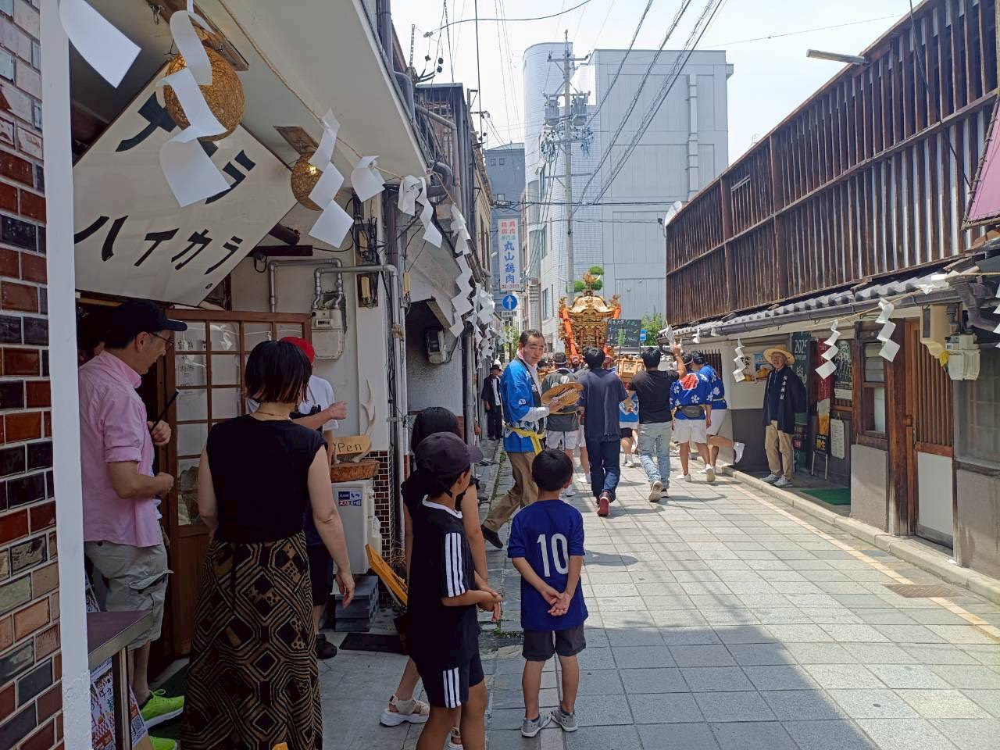
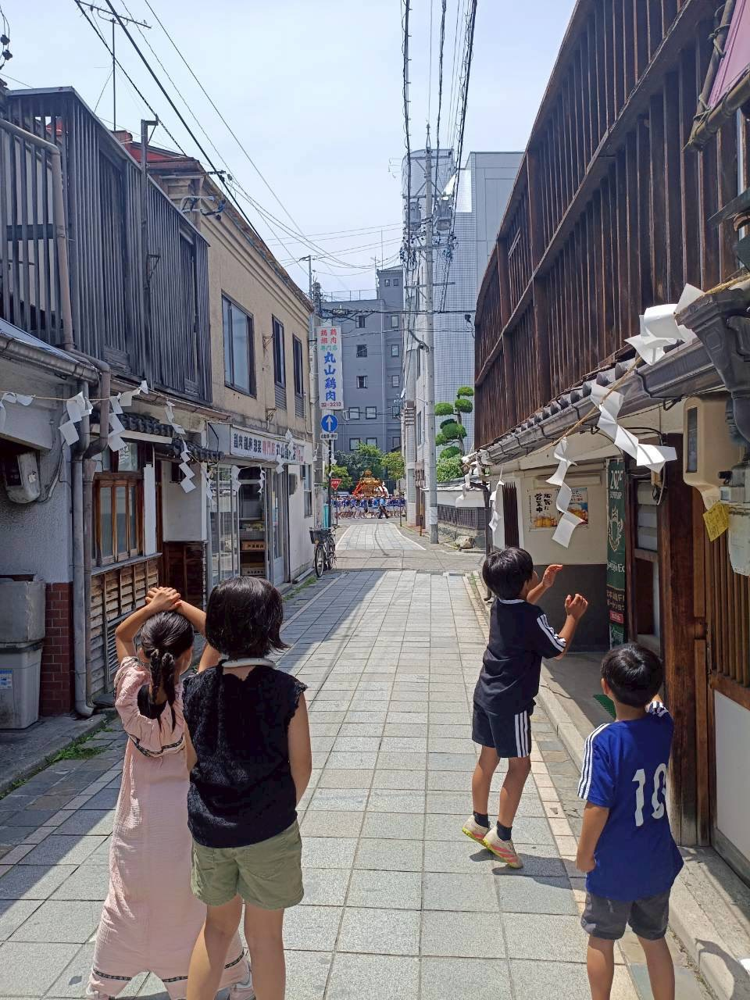
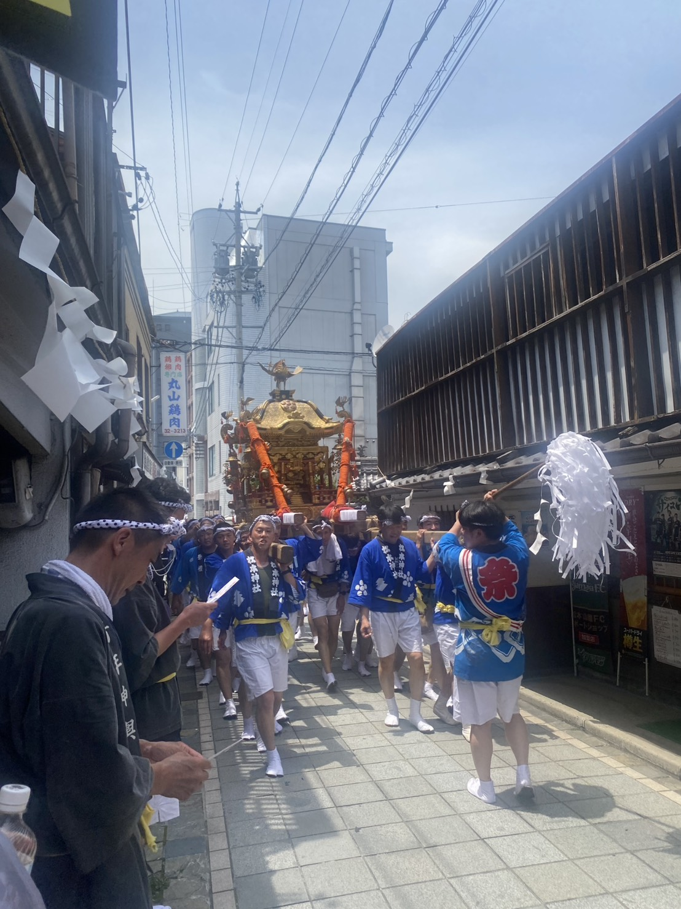
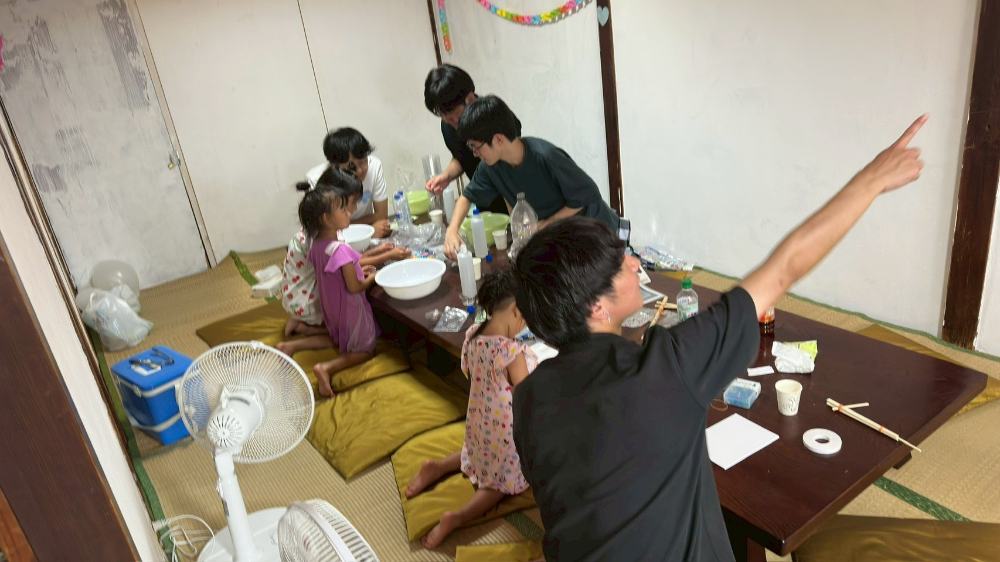
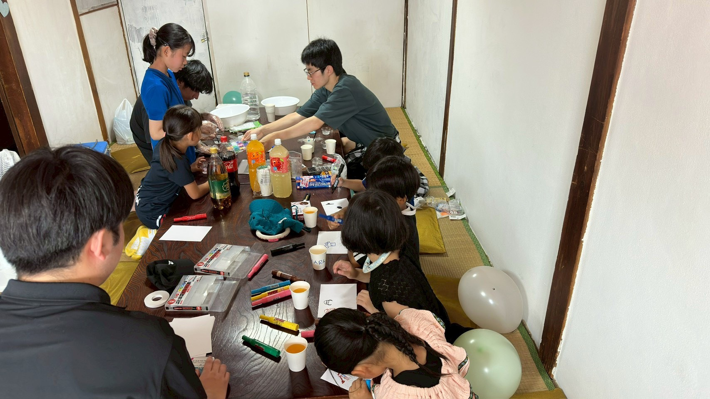
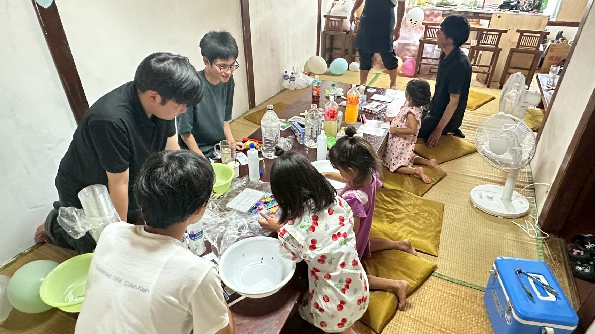
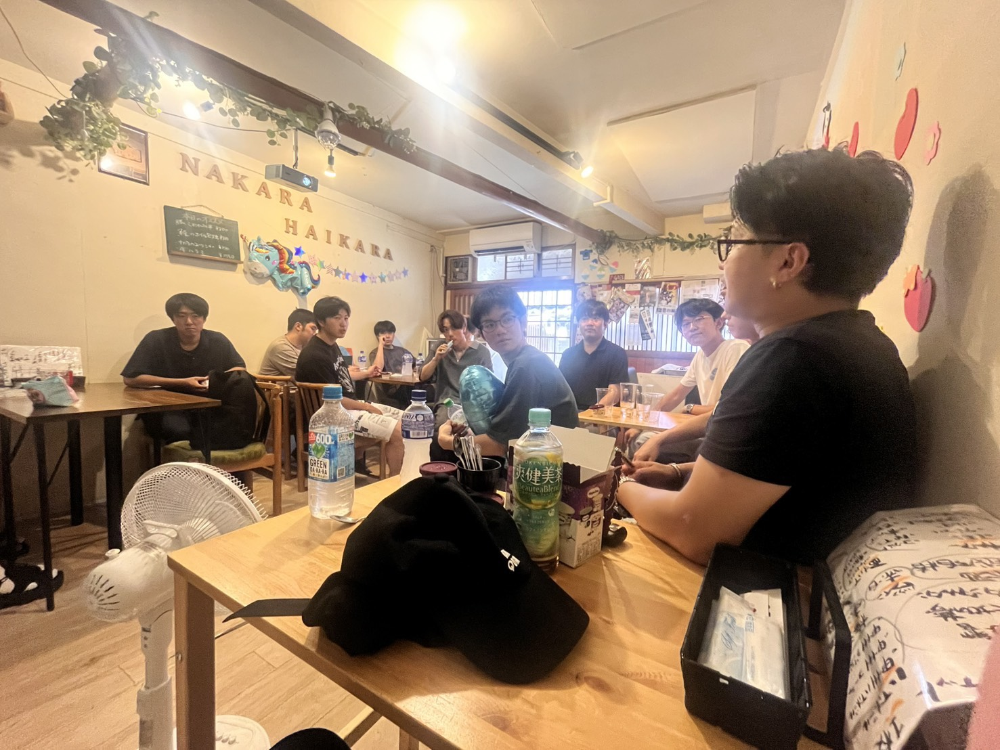
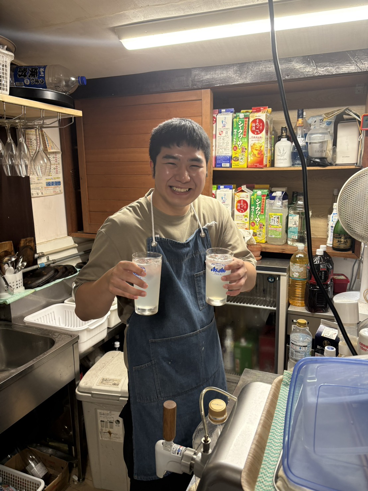
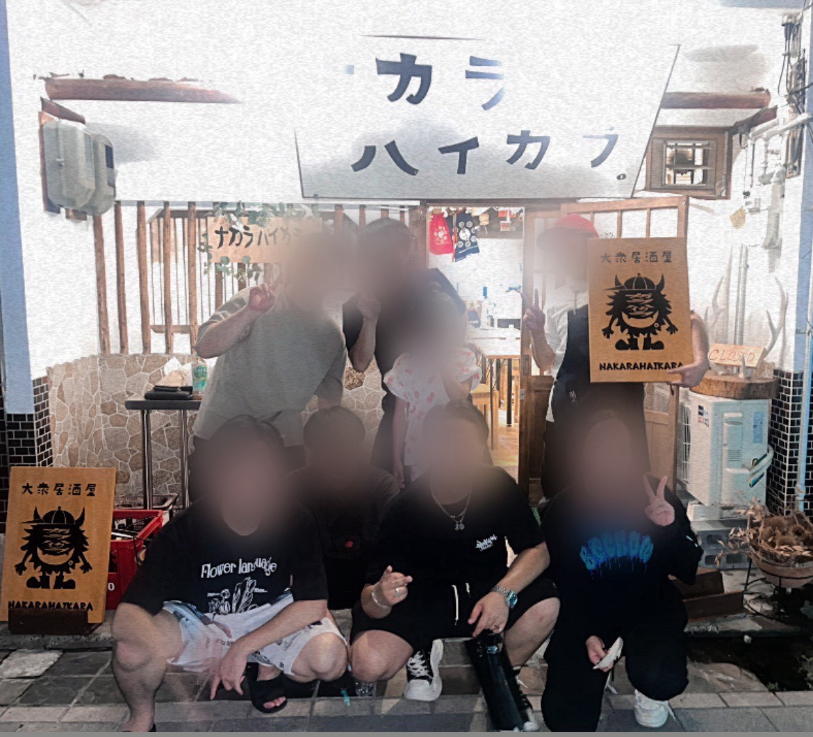

今日は少しだけ、いつもと違う日。
店の前には紙垂が飾られ、神輿が町を通ります。
子どもたちは、神輿が来るのを楽しみに待っています。



二階では、松本大学の学生たちが先生になり、スライムづくりやお絵描きを一緒に楽しみました。
最初は緊張していた子どもたちも、帰る頃には笑顔いっぱいでした。



一階では、お父さんやお母さんがドリンクを飲みながら、ゆっくりとした時間を過ごします。
子どもたちの笑い声を聞きながら、少しだけ自分たちの時間も楽しめる。
そんな一日になりました。

イベントが終わる頃には、学生もスタッフも、みんな少し疲れて、でも笑っていました。
最後はみんなで乾杯。
また一つ、この場所に思い出が増えました。



この日も、また一つ、
ナカラの歴史になりました。
続きは、
お店で。